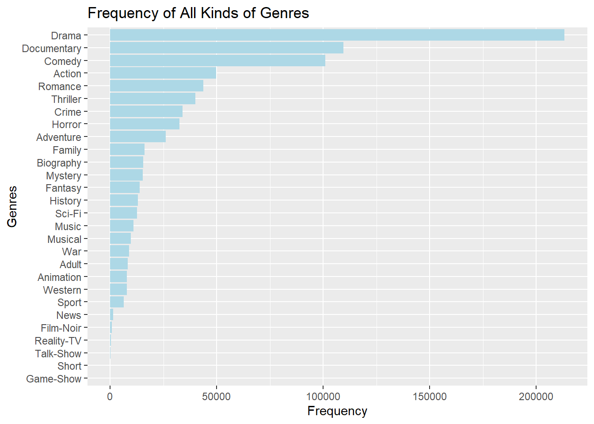

Chapter 3 Data transformation
3.1 Missing values
3.1.1 Initial data
head(title.basics)## # A tibble: 6 x 9
## tconst titleType primaryTitle originalTitle isAdult startYear endYear runtimeMinutes genres
## <chr> <chr> <chr> <chr> <dbl> <int> <int> <int> <chr>
## 1 tt0000502 movie Bohemios Bohemios 0 1905 NA 100 <NA>
## 2 tt0000574 movie The Story of the Kelly Gang The Story of the Kelly Gang 0 1906 NA 70 Action,Adventur~
## 3 tt0000591 movie The Prodigal Son L'enfant prodigue 0 1907 NA 90 Drama
## 4 tt0000615 movie Robbery Under Arms Robbery Under Arms 0 1907 NA NA Drama
## 5 tt0000630 movie Hamlet Amleto 0 1908 NA NA Drama
## 6 tt0000675 movie Don Quijote Don Quijote 0 1908 NA NA DramaWe can see that missing values in this dataset are represented with “\\N”.
3.1.2 Replace “\\N” with NA
title.basics <- title.basics %>%
filter(titleType=='movie')
title.basics <- subN(title.basics)
name.basics <- subN(name.basics)
title.crew <- subN(title.crew)
title.principals <- title.principals %>%
select(-c('job', 'characters'))
title.principals <- subN(title.principals)3.1.3 Data after transformation of missing values
head(title.basics)## # A tibble: 6 x 9
## tconst titleType primaryTitle originalTitle isAdult startYear endYear runtimeMinutes genres
## <chr> <chr> <chr> <chr> <dbl> <int> <int> <int> <chr>
## 1 tt0000502 movie Bohemios Bohemios 0 1905 NA 100 <NA>
## 2 tt0000574 movie The Story of the Kelly Gang The Story of the Kelly Gang 0 1906 NA 70 Action,Adventur~
## 3 tt0000591 movie The Prodigal Son L'enfant prodigue 0 1907 NA 90 Drama
## 4 tt0000615 movie Robbery Under Arms Robbery Under Arms 0 1907 NA NA Drama
## 5 tt0000630 movie Hamlet Amleto 0 1908 NA NA Drama
## 6 tt0000675 movie Don Quijote Don Quijote 0 1908 NA NA Drama3.2 Correct data type of columns
We can see from the output of the previous head function that some columns had wrong data types. For example, startYear and endYear should be integer columns. So we have to correct them.
title.basics$startYear <- as.integer(title.basics$startYear)
title.basics$endYear <- as.integer(title.basics$endYear)
title.basics$runtimeMinutes <- as.integer(title.basics$runtimeMinutes)
name.basics$birthYear <- as.integer(name.basics$birthYear)
name.basics$deathYear <- as.integer(name.basics$deathYear)3.3 Genres
We can see from the output of the previous head function that a movie might have multiple genres separated by comma. So we would like to extract them and create a dataframe title.genres of pairs of movie id and a single genre.
The dataframe of title.genres looks like this:
head(title.genres)## # A tibble: 6 x 2
## tconst genres
## <chr> <chr>
## 1 tt0000574 Action
## 2 tt0000574 Adventure
## 3 tt0000574 Biography
## 4 tt0000591 Drama
## 5 tt0000615 Drama
## 6 tt0000630 DramaThese are all genres:
unique(title.genres$genres)## [1] "Action" "Adventure" "Biography" "Drama" "Fantasy" "Comedy" "War" "Documentary" "Crime"
## [10] "Romance" "Family" "History" "Sci-Fi" "Thriller" "Western" "Sport" "Mystery" "Horror"
## [19] "Music" "Animation" "Musical" "Film-Noir" "News" "Short" "Adult" "Reality-TV" "Talk-Show"
## [28] "Game-Show"This plot shows frequencies of all kinds of genres. 
We can see that the number of dramas is the largest, almost twice as large as the number of documentaries and comedies. The frequencies of action movies, romantic movies, thrillers, crime movies, horror movies and adventure movies are close and more than the frequencies of other genres. In the interactive component section, we will mainly analyze some interesting facts about the most frequent genres.
3.4 Save the transformed dataframes
Finally, we want to save the transformed dataframes so that we can load them anytime we want without performing the transformation again.
save(title.genres, file='data/title.genres.RData')
save(title.basics, file='data/title.basics.RData')
save(name.basics, file='data/name.basics.RData')
save(title.crew, file='data/title.crew.RData')
save(title.principals, file='data/title.principals.RData')
save(title.ratings, file='data/title.ratings.RData')